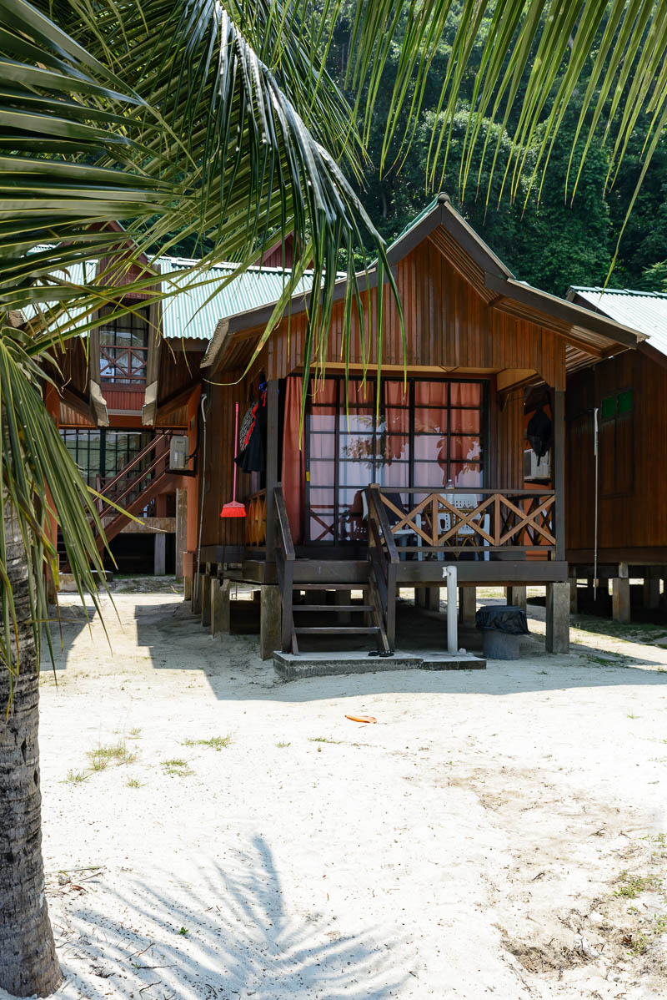
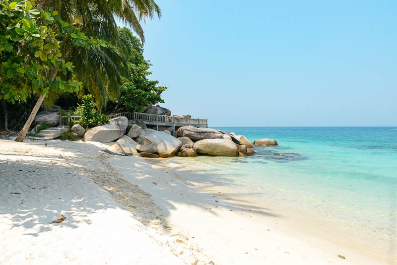
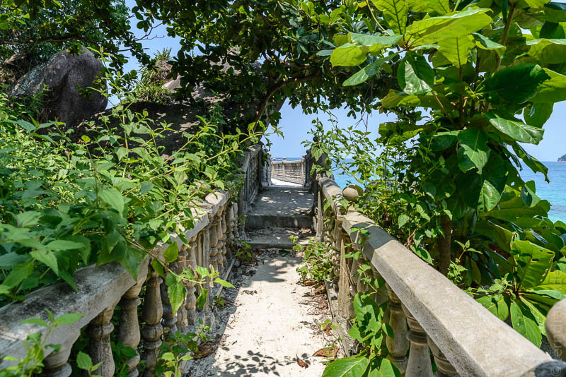
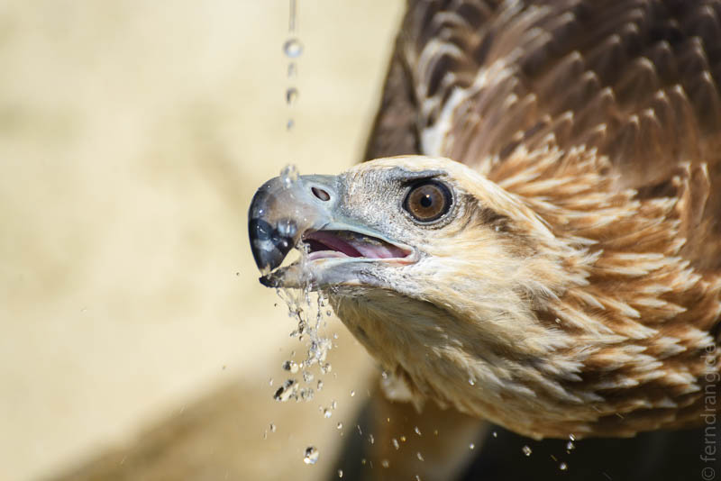
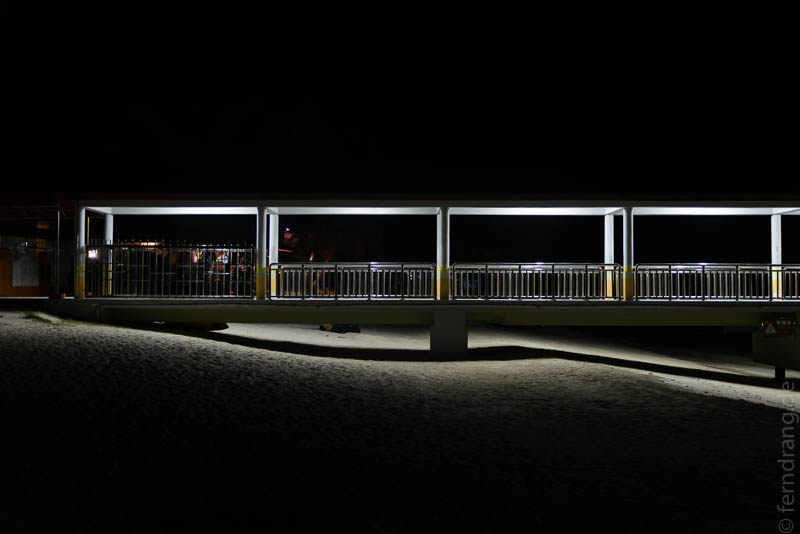

Der erholsame Teil der Reise hat begonnen. Wir haben Borneo verlassen und sind in den Norden der Peninsula nach Kota Bharu geflogen. Der Ort liegt nahe der thailändischen Grenze und ist ein guter Ausgangspunkt für die Perhentian Islands. Nach den herrlichen Wäldern Borneos ist die Fahrt durch die tropische Einöde ernüchternd. Die Flora erschöpft sich in Palmen und Bananen und die Straßenränder sind voller Müll. Knapp eine Stunde südlich liegt Kuala Besut, ein hektisches, kleines Kaff, von dem aus der Bootsverkehr zu den Inseln startet. In wenigen Minuten wurden wir abgefertigt und in ein kleines Boot verfrachtet. Die Außenborder sind übertrieben stark und haben uns die Mundwinkel schlackern lassen. Im Fahrtwind bekommt man kein Auge auf. Aber nach etwas über einer halben Stunde hat sich die Fahrt verlangsamt. Ein vorsichtiger Blick durch die halb geschlossenen Lider zeigt zwei grüne Halbkugeln, die von Booten umschwirrt im Meer liegen.
Auf der kleineren Insel (kecil) gibt es ein Dorf, das am Ostufer klebt. In der Mitte steht eine seltsame Moschee-Jetty-Kombination. Daneben kleben noch ein paar Häuser. Die größere Insel (besar) ist unsere und sieht auf der Karte aus wie Australien. An der Südwest-Küste wurde ein überproportionierter Steg gebaut, an dem wir rausgeworfen wurden. Auf den ersten Blick schien die Insel sehr viel geschäftiger zu sein als wir erwarteten. Das lag aber wohl am Nationalfeiertag, den viele Einheimische für einen Strandausflug genutzt hatten. Letzten Endes geht es in Abdul's Chalet recht beschaulich zu. Unsere Hütte steht nur zehn Meter vom Wasser entfernt und hat eine schöne, schattige Terrasse.


Das Meer lädt hier zum Schnorcheln ein (eigentlich auch zum Tauchen, aber wir sind wieder zu faul). Direkt vor der Tür sind kleine Korallenplacken im flach abfallenden Sand. Unter Wasser tummeln sich erstaunlich viele Rifffische. Rund um den Anleger sind vor einigen Jahren künstliche Riffe angelegt worden, die schon eifrig bewachsen wurden. Unter anderem wurden als großzügige Spende einer Bank drei Geldautomaten versenkt. Leider sind es die einzigen auf der Insel geblieben. Eine Bucht weiter gibt es Anemonen im Überfluss, und auch Baby-Haie und Tintenfische kann man sehen.
Auf der ganzen Insel gibt es keine Autos und Straßen. Man kann sich von den Bootsleuten in andere Buchten fahren lassen. Manche Strände sind auch zu Fuß über den Jungle Track zu erreichen. Hier geht es über Dschungeltreppen (Wurzeln) die grünen Hügel hinauf und hinab bis man auf der anderen Seite wieder ausgespuckt wird.


Da Schlafen, Essen, Baden und Lesen die Hauptbeschäftigungen auf der Insel sind, nähern wir uns mit dem Ende unserer Ferien auch zügig dem gewünschten Erholungsgrad. Wir hoffen, dass die endlose Rückreise das nicht alles wieder zunichte macht.
